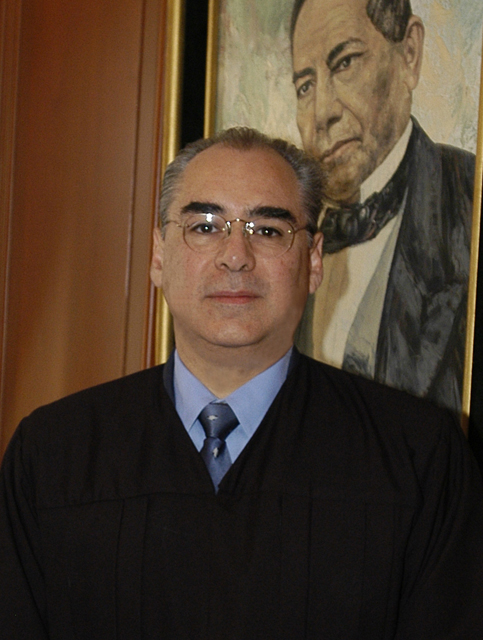

Ministro José Fernando Franco González Salas
Presidente de la Segunda Sala
Presidente de la Segunda Sala
Nació en México, Distrito Federal, el 4 de diciembre de 1950.
1979-1980. Universidad de Warwick, Reino Unido. Estudios en Administración Pública y Ciencias Políticas.
1969-1974. Escuela Libre de Derecho, donde obtuvo el título de abogado en marzo de 1977.
1966-1968. Estudios de Preparatoria en el Centro Universitario México.
1956-1965. Estudios de Primaria y Secundaria en el Colegio Simón Bolívar.
17 de enero de 2005 al 12 de diciembre de 2006. Profesor de tiempo completo en el Departamento de Derecho, impartiendo los cursos primero y segundo de Derecho Constitucional, Derecho Parlamentario y Derecho Electoral; Director del Centro de Estudios de Derecho Público en el ITAM.
8 de diciembre de 2000 al 15 de enero de 2005. Subsecretario del Trabajo, Seguridad y Previsión Social en la STPS.
2 de diciembre de 1999 al 6 de diciembre de 2000. Secretario General de la H. Cámara de Diputados.
Enero de 1998 a noviembre de 1999. Profesor de tiempo completo en el Departamento de Derecho del Instituto Tecnológico Autónomo de México y Director del Centro de Estudios de Derecho Público, impartiendo los cursos de Derecho Laboral, Administrativo (I-II) y de Derecho Electoral y Parlamentario.
Noviembre de 1996 al 12 de enero de 1998. Subsecretario de Desarrollo Político de la Secretaría de Gobernación.
Octubre de 1990 a octubre de 1996. Magistrado Presidente del Tribunal Federal Electoral.
Julio a octubre de 1990. Asesor de Estudios Especiales de la Presidencia de la Comisión Nacional de Derechos Humanos.
Enero de 1989 a junio de 1990. Subdirector General “B” de la Dirección General de Asuntos Jurídicos de la Presidencia de la República.
1987-1989. Magistrado Numerario del Tribunal de lo Contencioso Electoral.
1982-1987. Titular de la Jefatura de Relaciones Laborales del Instituto Mexicano del Seguro Social.
1981-1982. Secretario Técnico de la Oficialía Mayor de la Secretaría de Agricultura y Recursos Hidráulicos.
1976-1979. Secretario General de la Junta Federal de Conciliación y Arbitraje.
1975-1976. Asesor del Coordinador Jurídico del Banco Nacional de Crédito Rural.
1973-1975. Asesor de la Jefatura de Relaciones Laborales del Instituto Mexicano del Seguro Social.
1972. Primer Secretario de Acuerdos del Tribunal para Menores.
1971-1972. Asistente de la Subdirección Jurídica de la Comisión de Fomento Minero.
Enero de 1998 a diciembre de 2006. Profesor del Instituto Tecnológico Autónomo de México (ITAM). Impartió las materias de Derecho Laboral, Administrativo, Constitucional I y II, Derecho Parlamentario y Derecho Electoral.
1981 a la fecha. Profesor titular de Derecho Administrativo en la Escuela Libre de Derecho.
Autor del libro: Los impedimentos e incompatibilidades en el marco del estatuto personal de los senadores; coautor de los libros: La Competencia en Materia Laboral y los Tribunales de Seguridad Social, así como Derechos y Cultura Indígena. Autor de diversos artículos sobre Derecho Constitucional, Electoral, Parlamentario, Administrativo y Laboral.
Ha dictado conferencias en diversos foros nacionales e internacionales sobre las mismas materias.
Barra Mexicana. Colegio de Abogados.
Sociedad Mexicana de Geografía y Estadística.